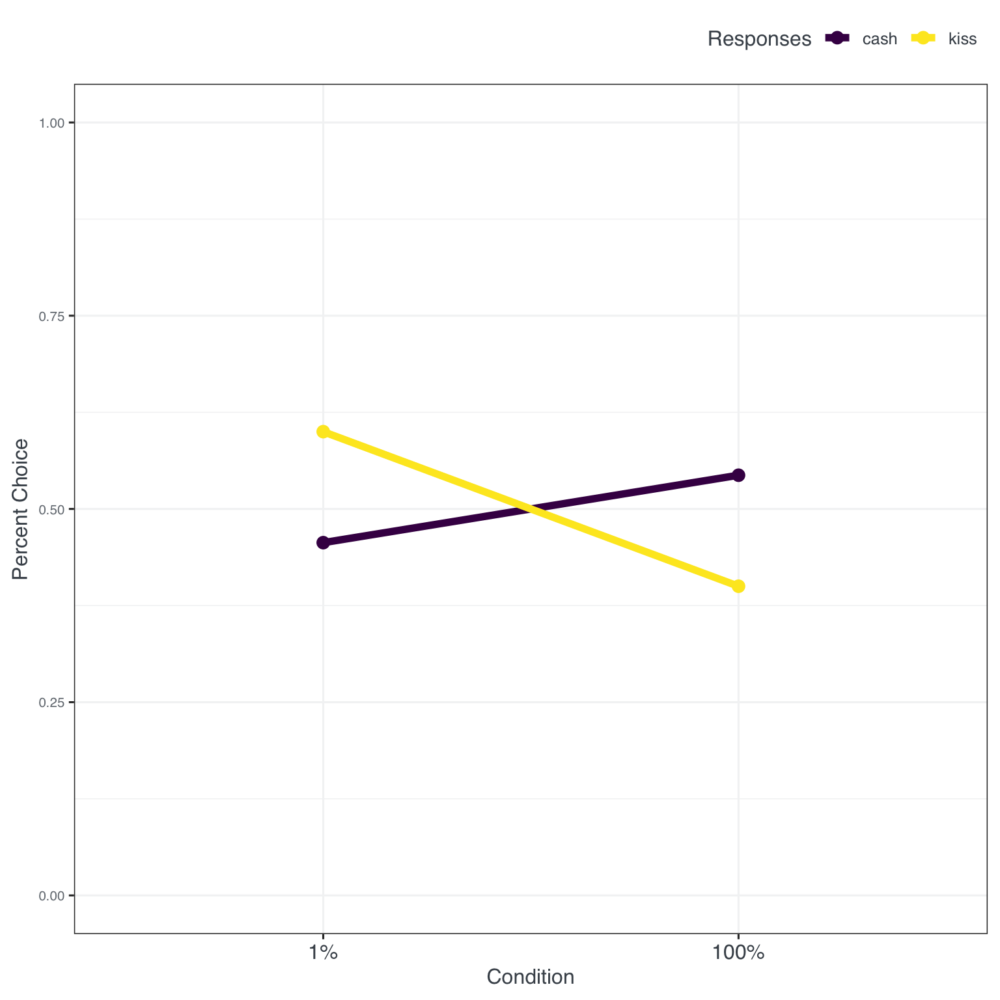
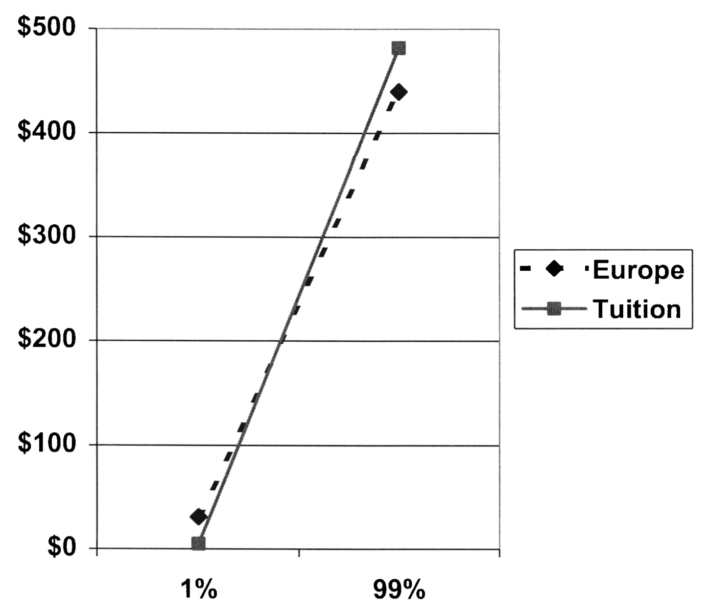
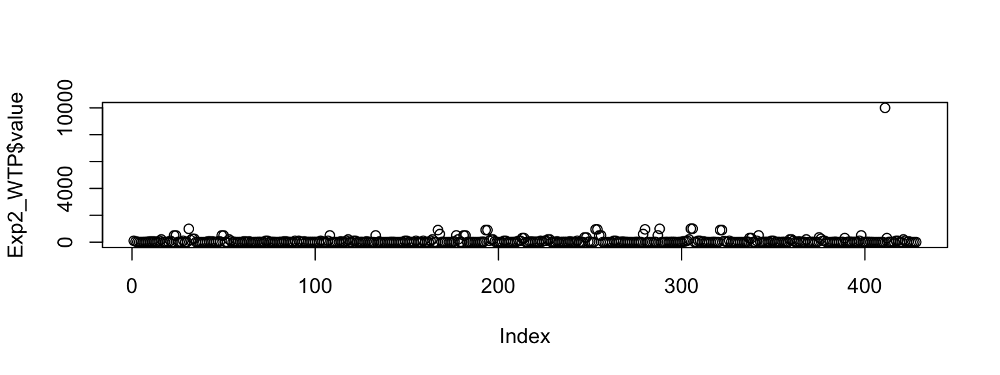
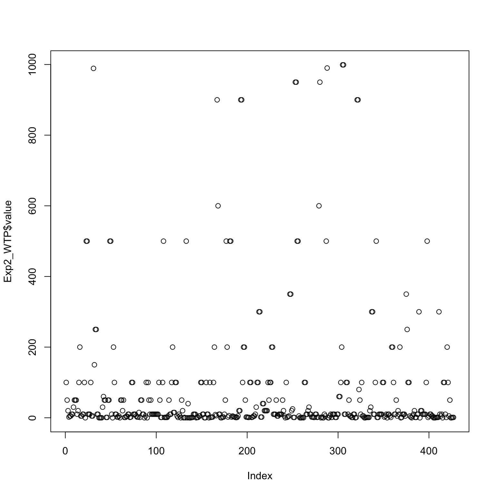
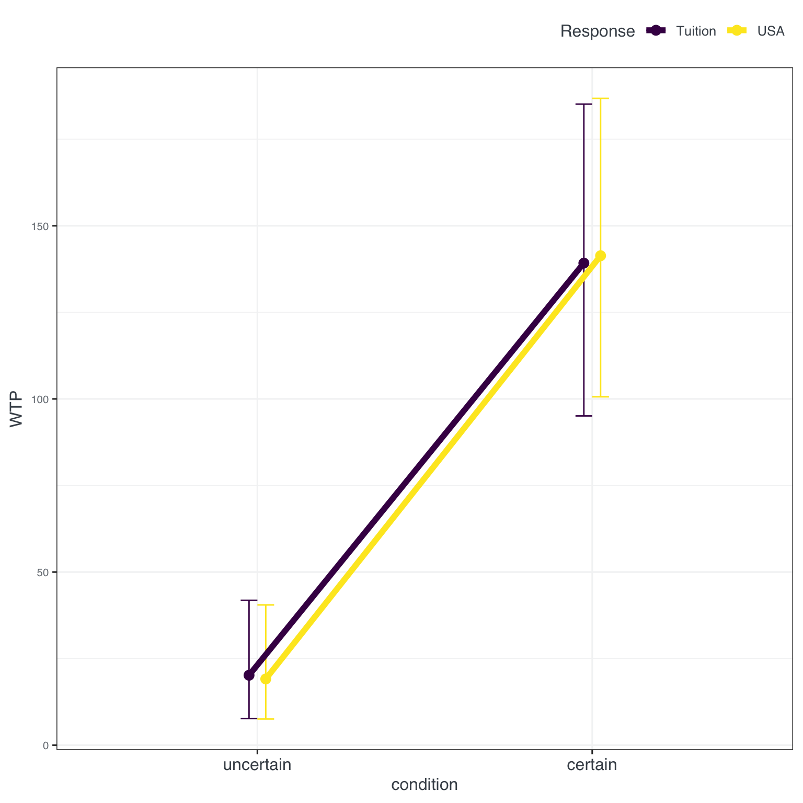
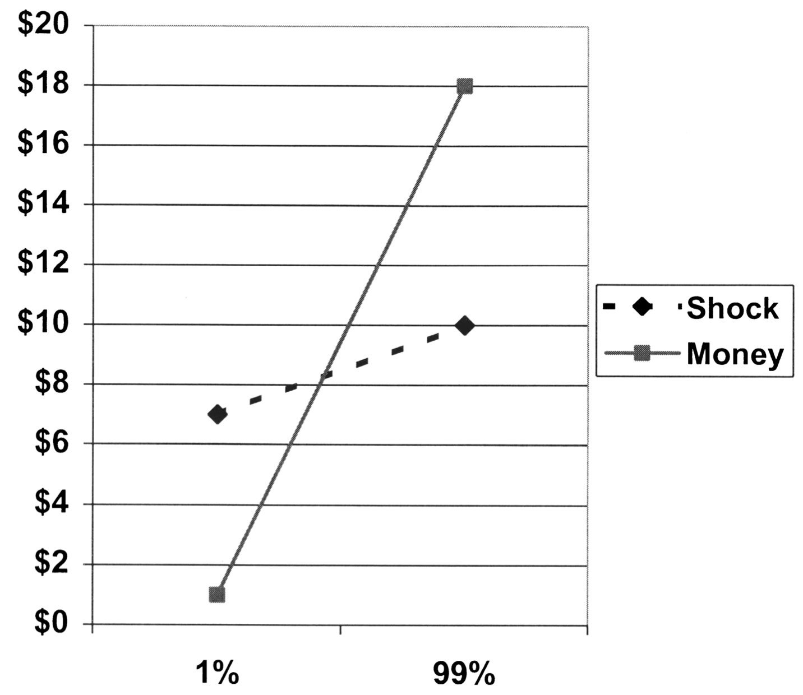
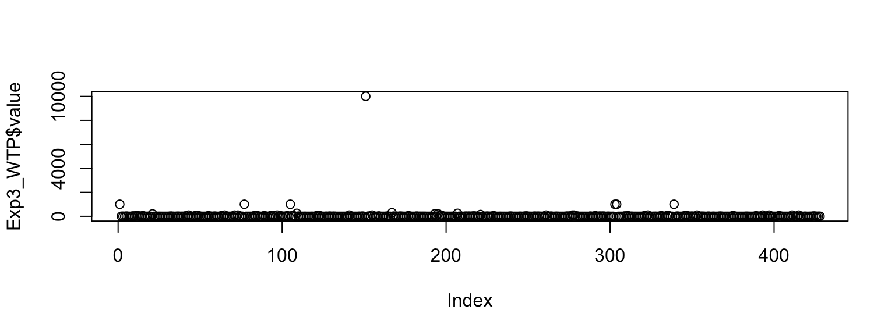
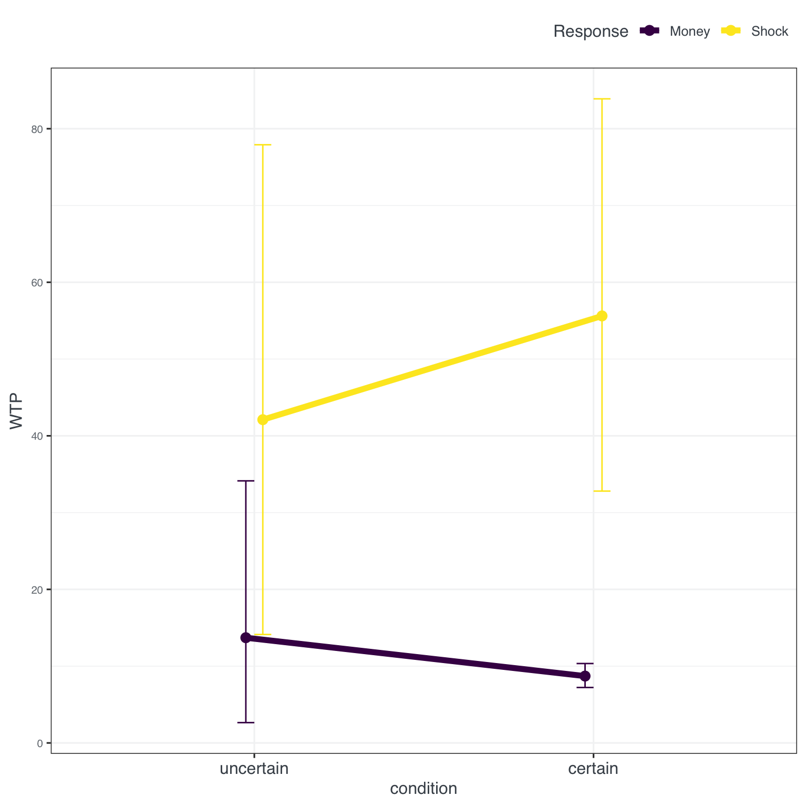

Original work
Rottenstreich, Y., & Hsee, C. K. (2001). Money, kisses, and electric shocks: On the affective psychology of risk. Psychological science, 12(3), 185-190. DOI
Team Bachelor Autumn 2022
- Dominik Basler
- Luca Burkart
- Sabrina Clement
- Tanja Erni
- Dunia Lemqadem
- Venusza Sivaramalingam
Abstract
Prospect theory’s S-shaped weighting function is often said to reflect the psychophysics of chance. We propose an affective rather than psychophysical deconstruction of the weighting function resting on two assumptions. First, preferences depend on the affective reactions associated with potential outcomes of a risky choice. Second, even with monetary values controlled, some outcomes are relatively affect-rich and others relatively affect-poor. Although the psychophysical and affective approaches are complementary, the affective approach has one novel implication: Weighting functions will be more S-shaped for lotteries involving affect-rich than affect-poor outcomes. That is, people will be more sensitive to departures from impossibility and certainty but less sensitive to intermediate probability variations for affect-rich outcomes. We corroborated this prediction by observing probability-outcome interactions: An affect-poor prize was preferred over an affect-rich prize under certainty, but the direction of preference reversed under low probability. We suggest that the assumption of probability-outcome independence, adopted by both expected-utility and prospect theory, may hold across outcomes of different monetary values, but not different affective values.
Replication
Does affect change the way we evaluate choice options? To answer this question we run a direct replication and extension of Rottenstreich & Hsee (2001).
Demographics
We sample 214 Swiss participants (58.41% female, 1 non-binary and 2 missing) with an average age of M = 26.01 years (SD = 9.44).
Experiment 1
In experiment 1 Rottenstreich et al. explored the difference between participants making choices in an affect-poor or affect-rich condition between certain and uncertain (risky) choices. One alternative had “the opportunity to meet and kiss your favorite movie star” or USD 50.- in cash for certain as the options. The other had “the opportunity to meet and kiss your favorite movie star” or a 1% chance of winning USD 50.- in cash. The interaction between these affect and money options was the central test for their argument.
Looking back at Rottenstreich et al.’s (2001) (see Figure 1) results we see that the authors find quite a strong interaction effect with differences between the 1% and 100% option of more than 30 percentage points in the choices …

Inspecting our results we see the interaction effect but, in comparison, weaker with differences of roughly 20 percentage points.
This is also shown in a Chi^2 test to compare choice proportions. But hey - different times, different country - there is something there to work with … lets move to Experiment 2 an see whether making the context of choices more concrete (from kisses to travel) and switching from choice to willingness to pay (WTP - for our economist friends) will change something in the results and replication.
Pearson's Chi-squared test
data: Exp1_calc$response and Exp1_calc$Sicherheit
X-squared = 4, df = 1, p-value = 0.05Experiment 2
In the second experiment again an uncertain condition was pitched against a high probability (99%) condition. From the paper: ‘One group of participants was presented with a USD 500 coupon that could be redeemed toward expenses associated with a summertime European vacation. Another group of participants was presented with a USD 500 coupon that could be used toward tuition payments at their university.’ Note that we changed the task replacing the trip to Europe with a trip to the USA. The results looked as follows (see Figure 3):

But first some housekeeping: the plot function from Base R is super useful to quickly get an overview of the values of a variable - so for our WTP responses (which were unrestricted in the questionnaire, we just checked that a number larger or equal to zero was entered) we quickly see that there is one response that stands out. Most outlier definitions (and there are plenty) would flag this response (> 9000) so for our analysis we will take out this one response:

This results in a much nicer distribution as can be seen in Figure 4:

Inspecting the results in Figure 6 we see that the interaction effect is basically gone revealing a very similar pattern to the original. A main effect for condition with a roughly 100 units increase in willingness to pay was found for tuition as well as the USA trip (see fig-results2).

The graphical results are also confirmed in an ANOVA with a significant effect for condition.
Df Sum Sq Mean Sq F value Pr(>F)
condition 1 1553141 1553141 50.97 4.1e-12 ***
emotional 1 30 30 0.00 0.98
condition:emotional 1 274 274 0.01 0.92
Residuals 423 12888296 30469
---
Signif. codes: 0 '***' 0.001 '**' 0.01 '*' 0.05 '.' 0.1 ' ' 1That is also found in a multi-level model, predicting WTP with condition X emotion adding a random effect for participants, see Table 1. No effect for condition or the interaction between the two predictors was found.
| value | |||||
|---|---|---|---|---|---|
| Predictors | Estimates | CI | Statistic | p | df |
| (Intercept) | 20.19 | -12.97 – 53.36 | 1.20 | 0.232 | 421.00 |
| condition [certain] | 119.02 | 72.12 – 165.93 | 4.99 | <0.001 | 421.00 |
| emotional [USA] | -1.07 | -20.95 – 18.81 | -0.11 | 0.916 | 421.00 |
| condition [certain] × emotional [USA] |
4.45 | -23.72 – 32.62 | 0.31 | 0.756 | 421.00 |
| Random Effects | |||||
| σ2 | 5470.70 | ||||
| τ00 ID | 24991.14 | ||||
| ICC | 0.82 | ||||
| N ID | 214 | ||||
| Observations | 427 | ||||
| Marginal R2 / Conditional R2 | 0.108 / 0.840 | ||||
Experiment 3
In the last experiment the domain was switched from positive (receiving money) to negative (potential punishment). The setup read as follows: ‘Participants were asked to imagine that they were required to participate in a psychological experiment. Some participants were told that the hypothetical experiment entailed some chance of a “short, painful, but not dangerous electric shock. Other participants were told that the hypothetical experiment entailed some chance of a $20 cash penalty’. The probability of the shock/penalty was varied between 1% and 99% (comparable to Experiment 2). The original results were as follows (see Figure 7):

Again, before looking at our own results - the outlier is back (it was actually always the same person). We, again, removed the outlier (see Figure 8).

For shock, inspecting Figure 9, our results look comparable to the original, but for money there is a much smaller WTP in our data and for the certain condition basically ignorance of the monetary punishment.

This visual results can also be seen in a clear effect of the type of punishment (money v. shock) in an ANOVA.
Df Sum Sq Mean Sq F value Pr(>F)
Sicherheit 1 1996 1996 0.14 0.7100
Punish 1 151515 151515 10.51 0.0013 **
Sicherheit:Punish 1 9145 9145 0.63 0.4262
Residuals 423 6097471 14415
---
Signif. codes: 0 '***' 0.001 '**' 0.01 '*' 0.05 '.' 0.1 ' ' 1As well as the multi-level model, predicting WPA with condition X punishment, with a random effect for participants (see Table 2).
| value | |||||
|---|---|---|---|---|---|
| Predictors | Estimates | CI | Statistic | p | df |
| (Intercept) | 8.71 | -14.10 – 31.52 | 0.75 | 0.453 | 421.00 |
| Sicherheit [U] | 5.00 | -27.26 – 37.26 | 0.30 | 0.761 | 421.00 |
| Punish [Shock] | 46.91 | 20.50 – 73.32 | 3.49 | 0.001 | 421.00 |
| Sicherheit [U] × Punish [Shock] |
-18.54 | -55.95 – 18.87 | -0.97 | 0.331 | 421.00 |
| Random Effects | |||||
| σ2 | 9659.50 | ||||
| τ00 ID | 4751.64 | ||||
| ICC | 0.33 | ||||
| N ID | 214 | ||||
| Observations | 427 | ||||
| Marginal R2 / Conditional R2 | 0.026 / 0.347 | ||||